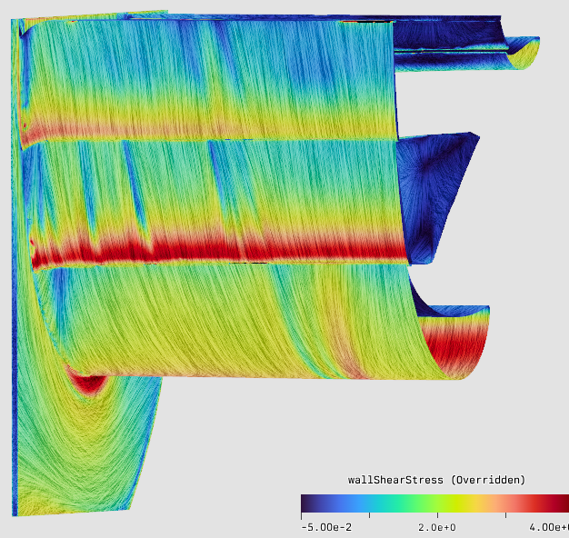
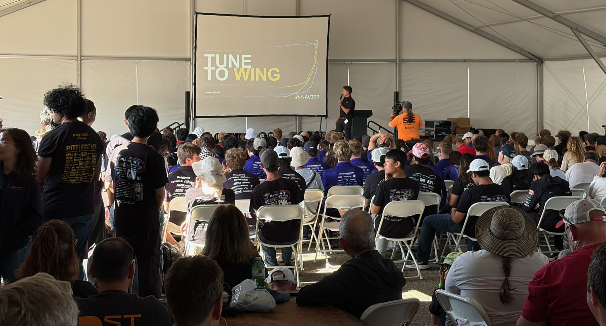

Formula SAE aerodynamics series
Tune to Wing
Race-car aerodynamics for Formula SAE and Formula Student teams, taught the way an F1 aero department works: design a wing from first principles, read a pressure plot, and break down a CFD result.
01
Watch
On YouTube · rear wing CFD

03
Live
FSAE Electric · Michigan · 2026
This year I took Tune to Wing live at FSAE Electric at Michigan International Speedway, where I was also a design judge, and gave the talk to a tent full of student teams.
Running an event or a team and want the talk? Get in touch.